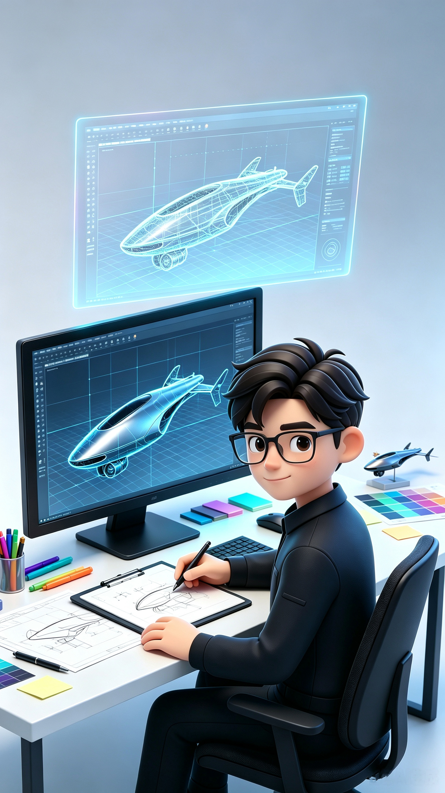

Cinema 4D
产品建模、场景搭建、镜头动画与三维动态设计。

USE SOFTWARE
产品建模、场景搭建、镜头动画与三维动态设计。
复杂建模、镜头动画与高要求三维制作。
材质、光影与写实产品渲染输出。
动态视觉、片头包装和视觉节奏设计。
影视级合成、跟踪、修复与光影匹配。
图像精修、色彩调整及创意合成。
品牌图形、版式与视觉设计延展。
产品与空间建模、动画制作。
节点式合成与动态视觉后期制作。
MY SKILLS
精准还原产品结构、比例与工艺细节，为渲染出图和动画制作建立可靠基础。
用材质、光影和构图塑造产品质感，输出适用于电商、品牌宣传与发布的高品质画面。
围绕产品卖点设计镜头、动作与节奏，让功能信息在动态中被直观理解。
整合抠像、跟踪、特效、调色与镜头修复，让不同元素形成统一自然的影像。
从产品定位和传播场景出发，建立可执行的视觉语言、风格方向和镜头叙事。
协调创意、制作、人员与节点，保证复杂商业项目在品质和效率之间稳定平衡。
WORK EXPERIENCE
负责产品安装视频、效果图、短视频及品牌宣传视频制作；统筹项目需求、团队协作与视觉品质。
服务汽车、手机、快消等行业品牌，参与并管理商业三维动画及产品广告项目。
参与动态视觉内容制作，以镜头节奏、画面质感与合成表达服务品牌传播项目。